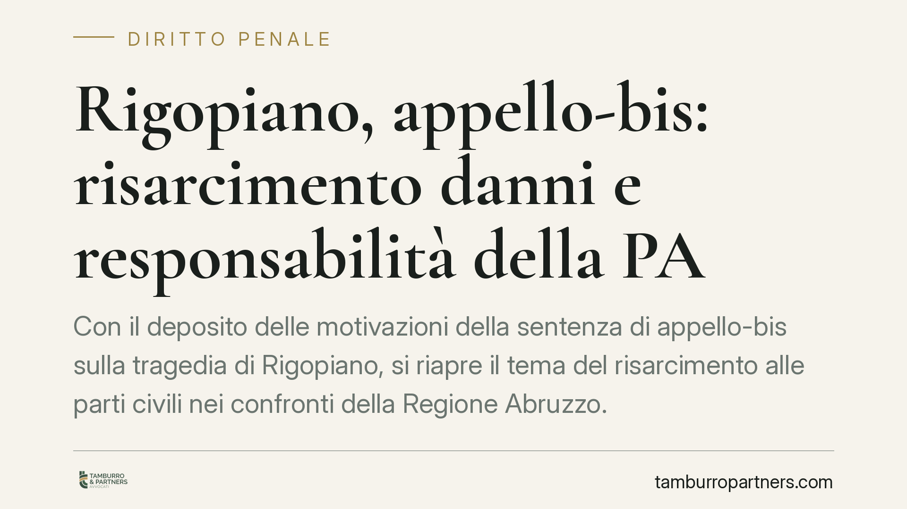

Rigopiano, appello-bis: risarcimento danni e responsabilità della PA
Con il deposito delle motivazioni della sentenza di appello-bis sulla tragedia di Rigopiano, si riapre il tema del risarcimento alle parti civili nei confronti della Regione Abruzzo. Al di là del caso, la vicenda offre spunti concreti su come opera la responsabilità civile della pubblica amministrazione anche quando il quadro penale resta incerto o mutevole.

Il caso e cosa emerge dalle motivazioni
La Corte d'Appello ha depositato le motivazioni della sentenza di appello-bis relativa alla tragedia di Rigopiano. Secondo quanto riportato, dalle motivazioni depositate emergerebbe un tema centrale in questi procedimenti: la carenza nella prevenzione dei rischi.
È opportuno un chiarimento di metodo. Le valutazioni sul merito della sentenza dipendono dal testo integrale delle motivazioni, che va letto per intero prima di trarne conseguenze. Qui interessa il quadro giuridico che la vicenda richiama, non un giudizio sui fatti.
Un punto tecnico spesso frainteso riguarda l'art. 449 del codice penale. Non si tratta di un reato autonomo: la norma punisce a titolo di colpa i delitti contro l'incolumità pubblica previsti in forma dolosa, tra cui il disastro dell'art. 434 c.p. In altre parole, il disastro colposo non è una fattispecie a sé, ma la versione colposa di condotte descritte altrove nel codice.
Responsabilità civile e risarcimento danni della pubblica amministrazione
Il profilo che più interessa le parti civili è quello risarcitorio. La responsabilità civile della pubblica amministrazione per i fatti dei propri dipendenti si fonda anzitutto sull'art. 28 della Costituzione, che estende all'ente pubblico la responsabilità per gli atti dei funzionari, e sull'art. 2043 del codice civile, la clausola generale del risarcimento del danno ingiusto.
È questo il binario principale: il cosiddetto rapporto organico lega l'operato del dipendente all'ente, che risponde in via diretta. L'art. 2049 c.c., sulla responsabilità del committente per i fatti dei preposti, può operare in relazione al rapporto tra ente e soggetto preposto, ma va contestualizzato: non è un pilastro autonomo e la sua applicazione alla PA segue logiche specifiche. Il fondamento resta l'art. 2043 c.c. letto con l'art. 28 Cost.
Nel processo penale, la distinzione tra i ruoli è decisiva. La parte civile (art. 74 c.p.p.) è il danneggiato che agisce nel processo per ottenere il risarcimento. Il responsabile civile (artt. 83 e seguenti c.p.p.) è invece il soggetto — come un ente pubblico o un assicuratore — chiamato a rispondere civilmente del fatto altrui. La Regione, quando citata come responsabile civile, risponde del danno pur non essendo imputata.
Assoluzione penale e pretesa risarcitoria
Un'assoluzione in sede penale non chiude, di per sé, la pretesa risarcitoria. La ragione è tecnica: gli standard probatori sono diversi.
Nel processo penale la condanna richiede la prova della responsabilità oltre ogni ragionevole dubbio. Nel giudizio civile è sufficiente il criterio del più probabile che non. Una condotta non punibile penalmente può quindi risultare fonte di responsabilità civile, e il danneggiato conserva la possibilità di agire in sede civile anche dopo un esito penale sfavorevole.
Implicazioni pratiche per i danneggiati
Per chi ha subìto un danno da un evento riconducibile a carenze organizzative o di vigilanza della PA, la vicenda conferma alcuni punti fermi.
Primo: la strada risarcitoria non dipende automaticamente dall'esito penale. Secondo: individuare correttamente il soggetto tenuto a rispondere — ente pubblico, funzionario, assicuratore — incide sull'efficacia dell'azione. Terzo: i tempi contano. Il diritto al risarcimento è soggetto a termini di prescrizione che è necessario verificare per tempo.
Cosa fare in concreto
- Verificare la prescrizione. Controllare il termine applicabile: per il danno da fatto illecito l'art. 2947 c.c. prevede in via generale cinque anni, con regole particolari quando il fatto costituisce reato.
- Reperire il testo integrale della sentenza e delle motivazioni, evitando di fondare scelte su sintesi giornalistiche.
- Individuare i soggetti responsabili, distinguendo tra responsabilità della PA, dei singoli funzionari e delle compagnie assicurative coinvolte.
- Documentare il danno in tutte le sue componenti, patrimoniali e non patrimoniali, con supporti idonei alla quantificazione.
- Valutare la sede più adeguata (costituzione di parte civile o azione civile autonoma) in base allo stato dei procedimenti.
Contributo informativo a cura di Tamburro & Partners Avvocati - Avv. Giuseppe Tamburro. Non costituisce parere legale.
Ogni condominio ha una storia a sé.
Se gestisci un'amministrazione e vuoi un confronto su una specifica questione condominiale, scrivi allo studio. Ti rispondiamo entro un giorno lavorativo.